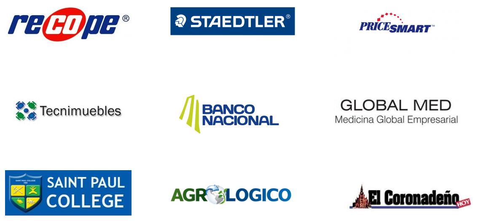

Cuenta en dólares: CTA 100-2-1480600464-3
Cuenta en colones: CR06 0151 0001 0011 1031 04
SINPE Móvil: 6895-8923
Vos podés ser una persona
generosa y solidaria.
Por medio de una donación mensual, decidí apoyar y defender los derechos de niños y niñas que han perdido el cuidado de sus familias o están en riesgo de que esto suceda.Gracias al apoyo de personas como vos, en 2021 conseguimos:
Maneras de donar
Cuenta en dólares: CTA 100-2-1480600464-3
Cuenta en colones: CR06 0151 0001 0011 1031 04
SINPE Móvil: 6895-8923
Algunos de nuestros donadores
